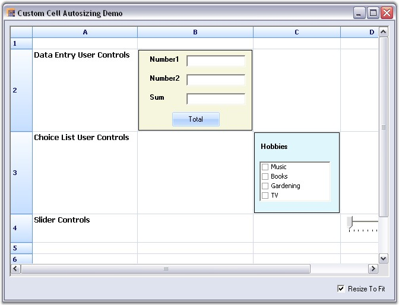

Essential Grid supports automatic resizing of cells in the Grid control when custom controls are placed inside the cells.
The Grid lets you add custom controls to cells by creating a CellModel class and a CellRenderer class. These custom controls can have different sizes. When these controls are placed in the Grid, the corresponding cell is automatically resized to fit the controls. This is achieved by overriding the OnQueryPrefferedClientSize method in the model class. The proper size of the control can be returned by using this method. The ResizeToFit method will then resize the cell to the size returned by the OnQueryPrefferedClientSize method.
The following code examples illustrates how to implement this feature in Grid control:
1. Using C#
|
[C#]
// Override this method to calculate proper control size and return the same. protected override Size OnQueryPrefferedClientSize(Graphics g, int rowIndex, int colIndex, GridStyleInfo style, GridQueryBounds queryBounds) { if(Grid[rowIndex,colIndex].Tag == null) throw new Exception("No User Control is tagged"); else { // Get the type of the control from Style.Tag. Control userControl = Grid[rowIndex,colIndex].Tag as Control;
// Calculate the size of the control. Size size = userControl.Size; size.Height += 2;
// Return the size. return size; } } |
2. Using VB.NET
|
[VB.NET]
' Override this method to calculate proper control size and return the same. Protected Overrides Function OnQueryPrefferedClientSize(ByVal g As Graphics, ByVal rowIndex As Integer, ByVal colIndex As Integer, ByVal style As GridStyleInfo, ByVal queryBounds As GridQueryBounds) As Size If Grid(rowIndex, colIndex).Tag Is Nothing Then Throw New Exception("No User Control is tagged") Else
' Get the type of the control from Style.Tag. Dim userControl As Control = TryCast(Grid(rowIndex, colIndex).Tag, Control)
' Calculate the size of the control. Dim size As Size = userControl.Size size.Height += 2
' Return the size. Return size End If End Function |
The following image shows how the cell resizes itself automatically to the size of the control, when a custom control is added to it.

Figure 178: Autosizing While Adding Custom Controls